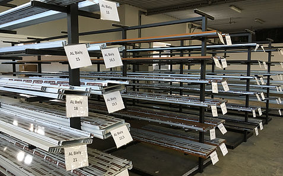
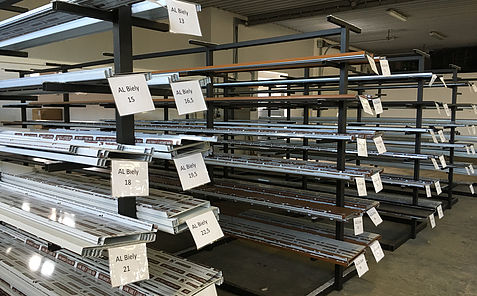
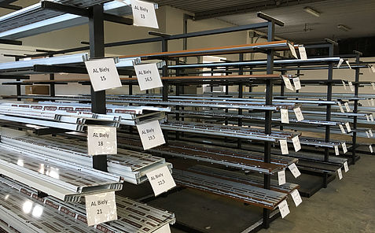
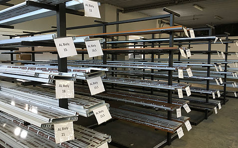

Aluplast - IDEAL 4000
Verwendung:
IDEAL 4000® Millionenfach im Einsatz, punktet dieses System durch seine gute und bewährte Stabilität sowie große Designvielfalt.
Systembeschreibung:
Aluplast - IDEAL 5000
Verwendung:
Die hervorragenden Dämmeigenschaften des IDEAL 5000® sorgen für erstklassigen Wohnkomfort. Hochwertige Profilsysteme von aluplast bieten ausgezeichneten Einbruchschutz und damit wohltuende Sicherheit.
Systembeschreibung:
Aluplast - IDEAL 8000
Verwendung:
IDEAL 8000® ist ein Profilsystem mit einer Bautiefe von 85 mm. Durch das Zusammenspiel der großen Bautiefe mit filigranem Design ist ein Fenstersystem entstanden, das sowohl energetisch als auch optisch auf höchstem Niveau ist.
Die große Bautiefe sowie die 6-Kammertechnik sorgen für optimalen Wärmeschutz und wohltuende Stille in Ihren 4 Wänden.
Systembeschreibung:

Decco - 71
Verwendung und Systembeschreibung:

Decco - 73
Verwendung und Systembeschreibung:
Decco 73 ist ein Kunststofffenster system mit drei Dichtungen mit sehr guten thermischen Eigenschaften. Verfügbar in zwei Optionen: gerade und halb beleuchtet.
Aliplast - Imperial
Verwendung und Systembeschreibung:
Aliplast Imperial ist ein 3-Kammer System bestimmt für die Konstruktion von Fenstern, Türen und vieler verschiedener Arten von Vitrinen. Die thermisch getrennte Zwischenlage (24 mm) die in den Profilen eingesetzt ist, wurde aus speziellen Materialen gefertigt. Sie erhöht die Beständigkeit der Außen- und Innerkammer der Profile erheblich. Die Rahmenbautiefe der Konstruktion beträgt 65 mm und die Flügelbautiefe 74 mm.
Dank der Anwendung von Beschlägen der Marken Hersteller und der vielen Schwellen Lösungen bekommen wir ein modernes und universäles System. Das Imperial System lässt uns sehr viele Arten von Fenstern und Türen, die an persönliche Bedürfnisse der Kunden angepasst sind, zu fertigen. Es ist möglich Fenster in der Einbruchshemmung Klasse RC3 zu bauen.